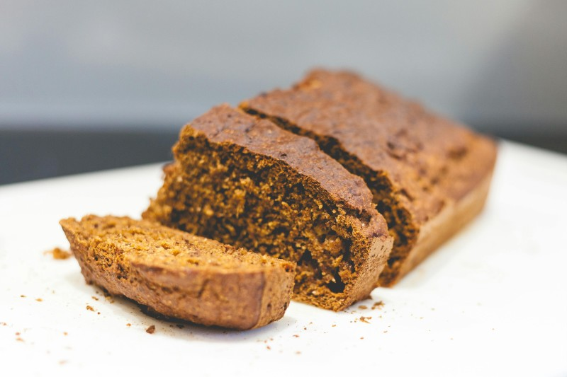

Home
Bean's Banana Bread

Ingredients
Bread
- 12" pan (prefereably seasoned cast iron)
- 8oz Butter
- 1.5 Cups Sugar
- 4 Eggs
- 4 Ripe Bananas
- 1.5 Cups Flour
- 1.5 t Baking Soda
- 1 t salt
- Butter for pan
- Pecans
- Zest of 2 lemons
Topping
- 3 oz Butter
- (Optional) Sliced banana
Instructions
- Preheat the oven to 400°F
- In a large mixing bowl cream the 8oz butter and sugar with a mixer until pale and fluffy
- Mix in the eggs until fully incorporated
- Mix in the smashed bananas and lemon zest
- Mix in the flour, baking soda and salt until all items are fully incorporated
- Rub unmelted butter on pan until thinly covered
- Pour the batter into the cast iron pan and place in oven
- (optional) After 10 minutes remove bread from oven and place slice bananas on top. Place back in oven
- Total cooking time = 45minutes or when middle is no longer liquid. If you oven runs hot you may need to reduce temperature. Pay attention
- Remove from oven and brush with melted butter
Home